Statistical Learning package documentation#
Note
This project is under active development.
The stats_learn package provides a framework to explore statistical learning with a Bayesian focus.
See User Guide to get started and stats_learn to explore the API.
A variety of random elements 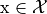 are implemented in the
random.elements submodule. Similar to other
distributions packages, methods are available for random
sampling (sample) and probability evaluation
(prob). Additionally, statistics such as the
mode and mean can be
accessed.
For supervised learning analysis, random models are implemented in the
random.models submodule. These models define fixed joint distributions
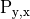 over the observed random elements and the
unobserved elements 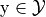. Conditional random elements can be generated with the
model_y_x method and used for prediction; furthermore, conditional
statistics such as mode_y_x are directly available.
The bayes subpackage implements similar elements/models with parametric representations.
Bayesian models define data distributions 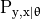 and use a
prior 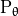 to characterize the model uncertainty.
Using observed training data pairs 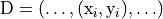, the
fit method formulates the posterior 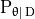
and the resultant Bayesian data model 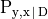.
To deploy statistical models in supervised learning applications, the predictors
subpackage provides objects that use these models to define inference and decision functions
(fit and predict,
respectively). By forming the predictive distribution 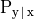 (or 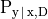
for Bayesian models), these predictors can operate on novel observations
and generate decisions 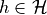 for arbitrary loss functions 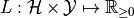.
To enable comparison with learning objects from popular machine learning packages, the API allows straightforward
customization of predictor subclasses. The predictors.torch
submodule uses PyTorch (and PyTorch Lightning) to
implement neural networks in the stats_learn API.
The package also includes the results submodule, which provides various functions that
enable fair and reproducible evaluations, as well as provide visualizations and Markdown-formatted output. The
data_assess function allows evaluation against a fixed dataset; the
model_assess function effects Monte Carlo approximation of the
expected loss by using a specified model to randomly generate datasets for evaluation. These functions also allow
each learner to be assessed over a set of hyperparameter values, performing computationally efficient retraining when
possible.